01 · Counter overview
Open original image ↗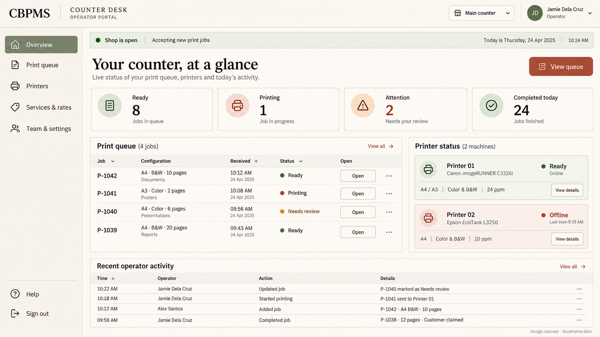
Twelve desktop design concepts for CBPMS. Counter Desk manages a shop; Print Station handles releases and local printing. Illustrative records appear only in these mockups. Shop implementation remains a future phase.
Ivory and muted olive, editorial headings, ledger-style tables and an open desktop workspace.

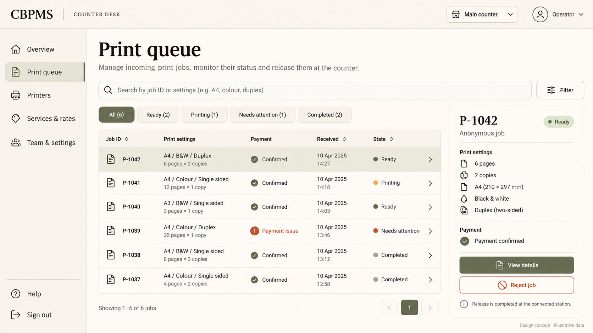
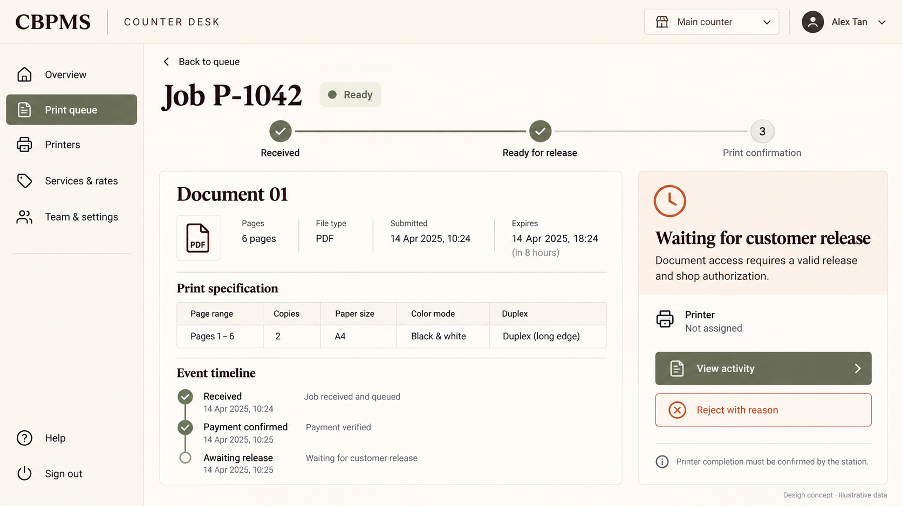
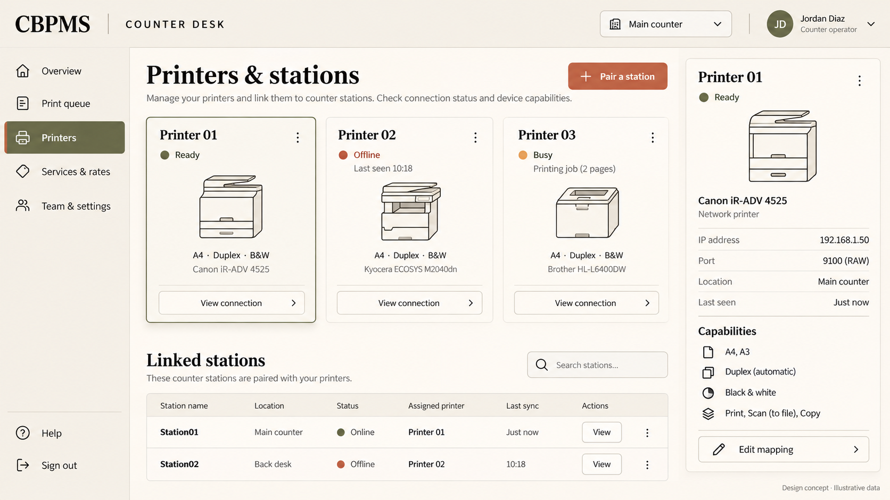
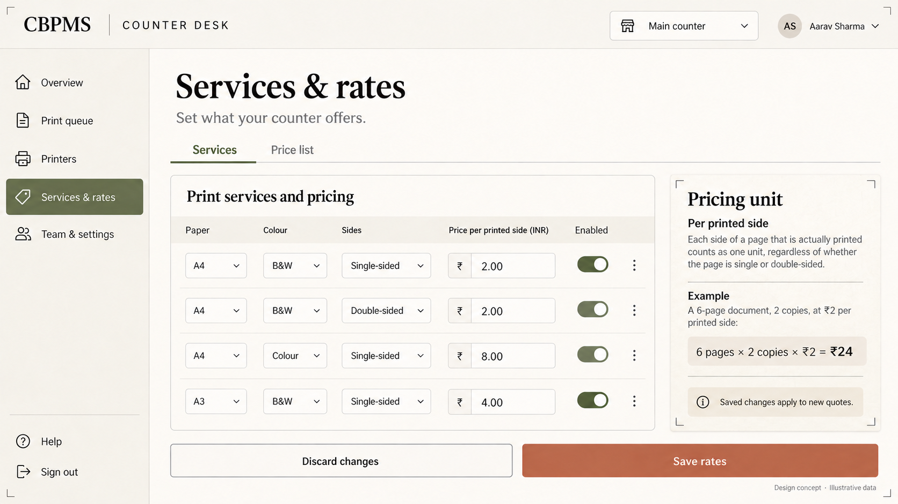
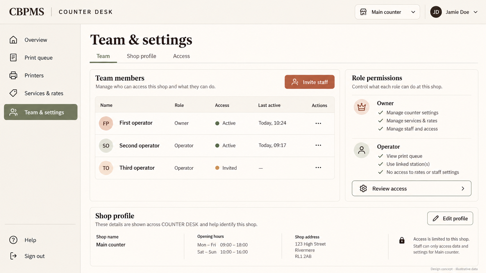
Espresso navigation, warm paper panels and clear operational controls for the shop computer.
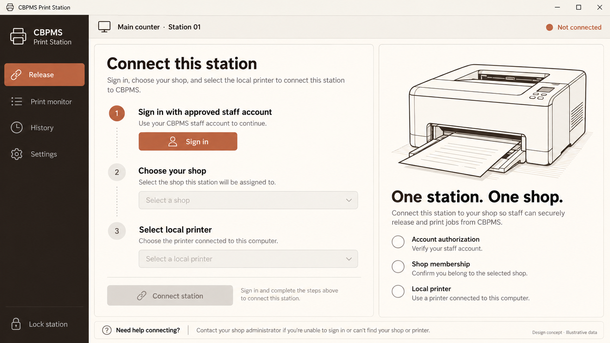
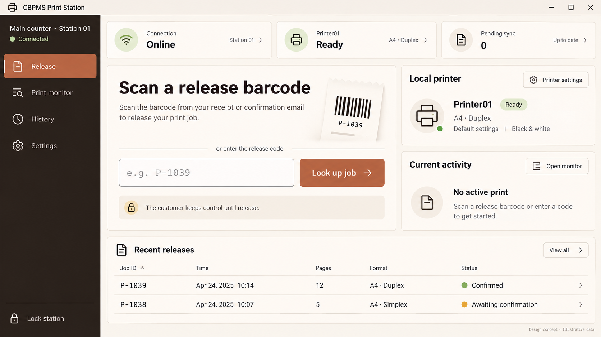
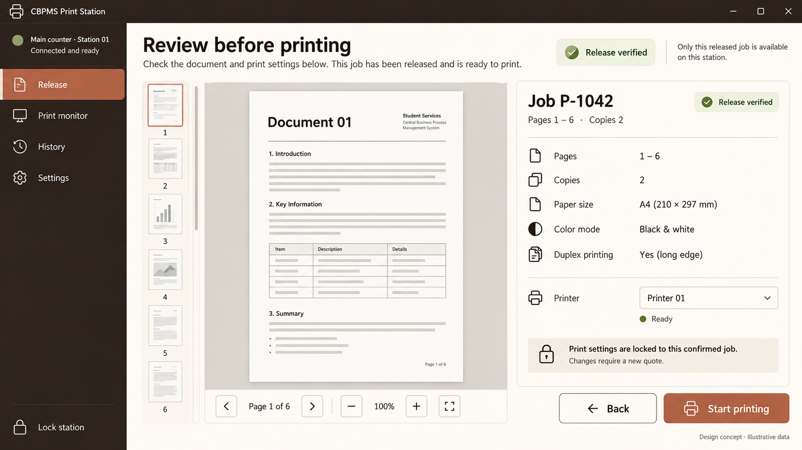
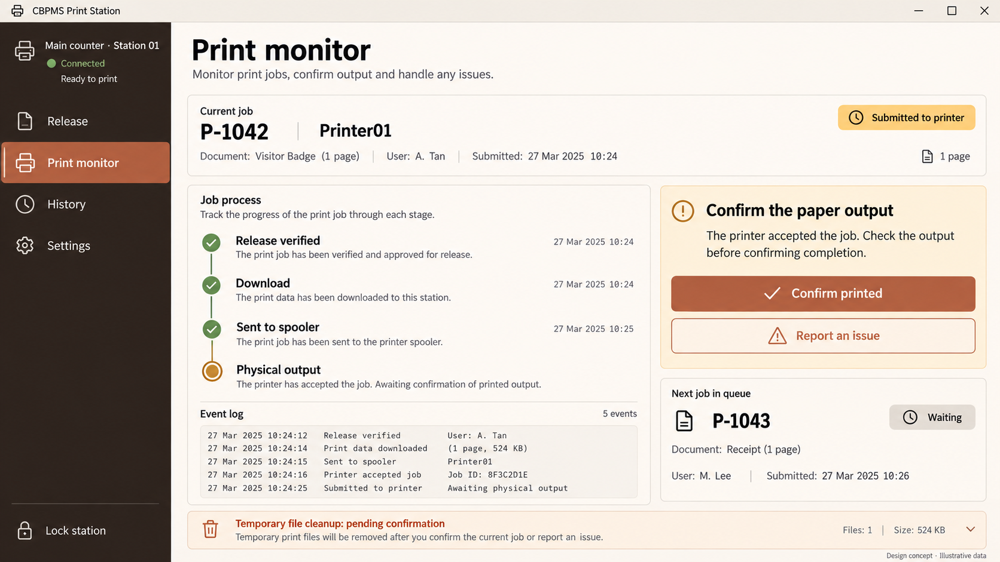
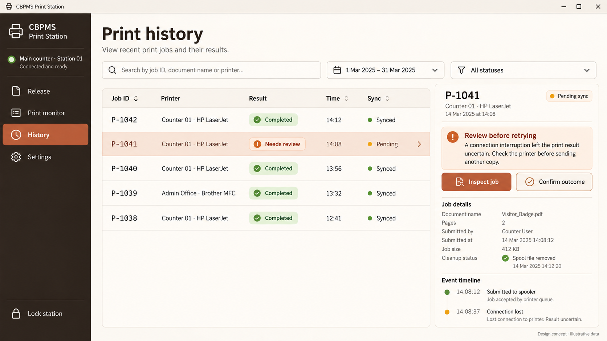
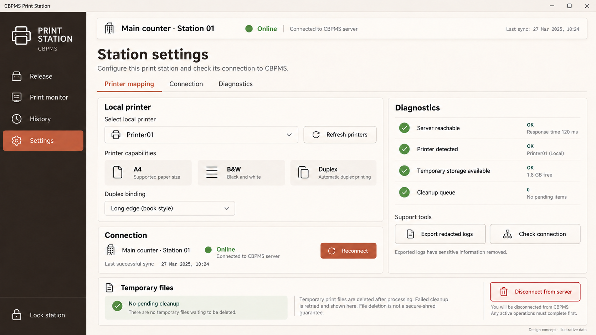